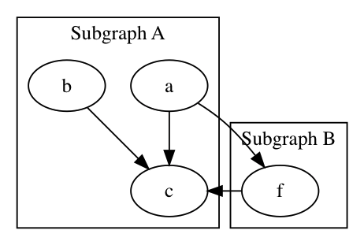
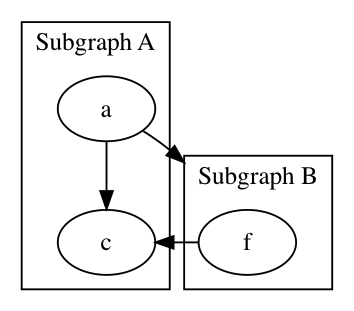

一、subgraph语法
子图的使用方法：
| 123 | subgraph cluster* { // xxxx } |
|---|---|
子图的语法和其他语法也是一样的，一个千万要注意的地方是子图的命名必须以cluster开头。
例如：
digraph {
subgraph cluster_0 {
label="Subgraph A";
a -> c;
b -> c;
}
subgraph cluster_1 {
label="Subgraph B";
a -> f;
f -> c;
}
}
效果：

二、把箭头指向容器的办法
如果希望把箭头容器，而不是指向容器内部元素的话，需要使用以下两个属性：
| 123 | compound=true;// a和b分别表示箭头的头部和尾部xx -> yy [lhead=a ltail=b] |
|---|---|
要注意的是compound=true属性一定需要，它是全局代码段的。
例如修改上图中的a到f的线条为**a到子容器
digraph demo {
compound=true;
subgraph cluster_0 {
label="Subgraph A";
a -> c;
}
subgraph cluster_1 {
label="Subgraph B";
f -> c;
}
a -> f [lhead=cluster_1];
}
效果：
